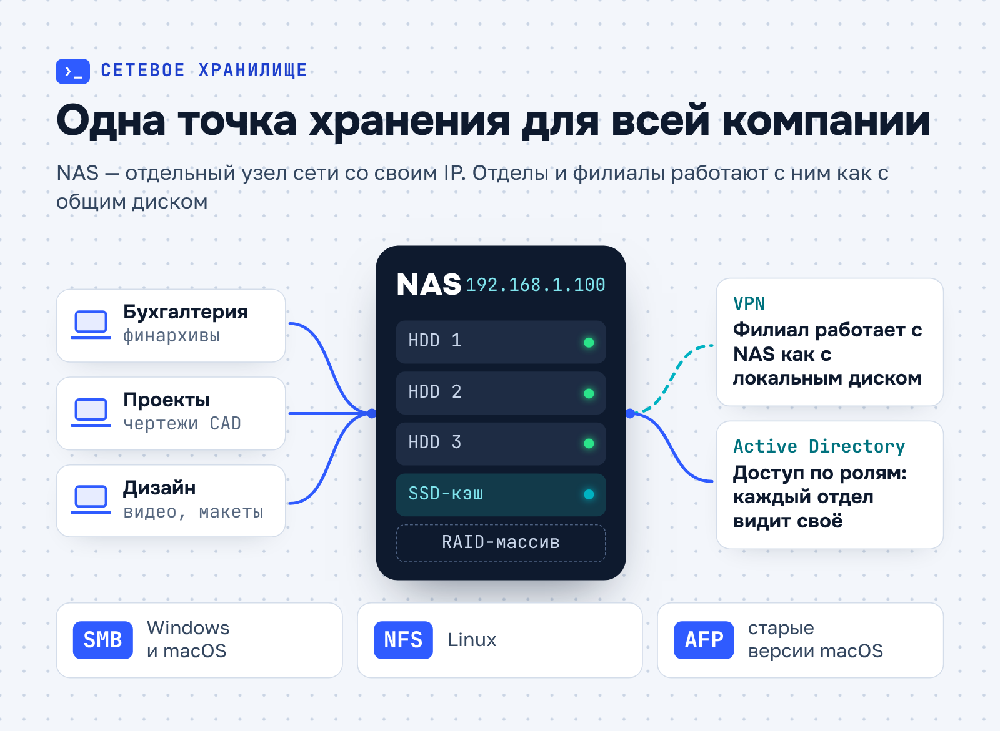
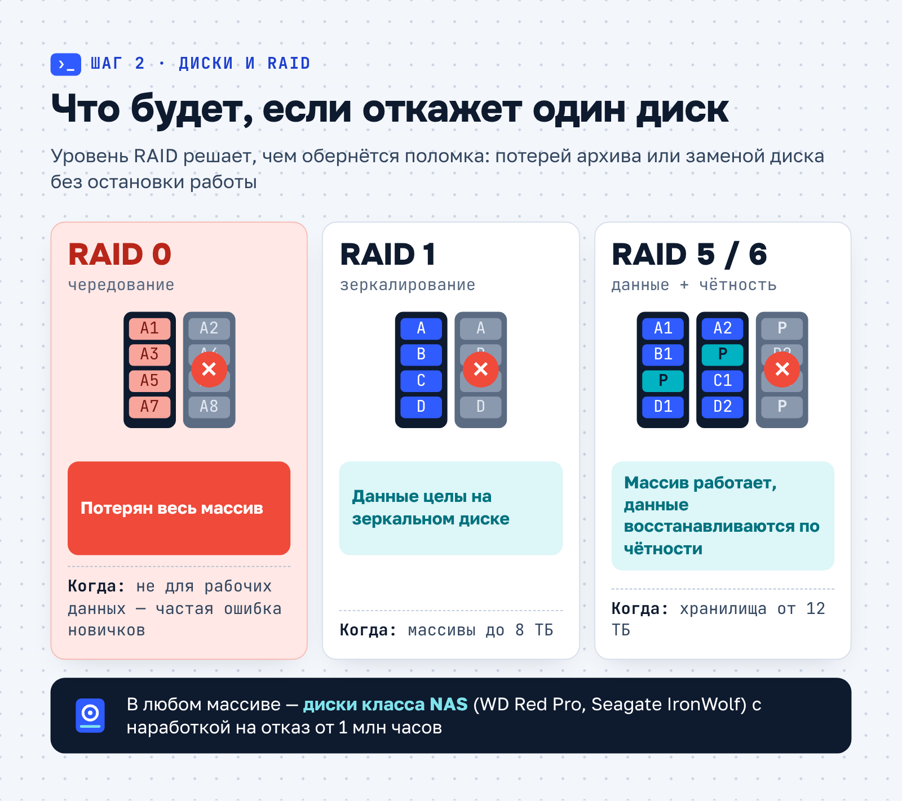
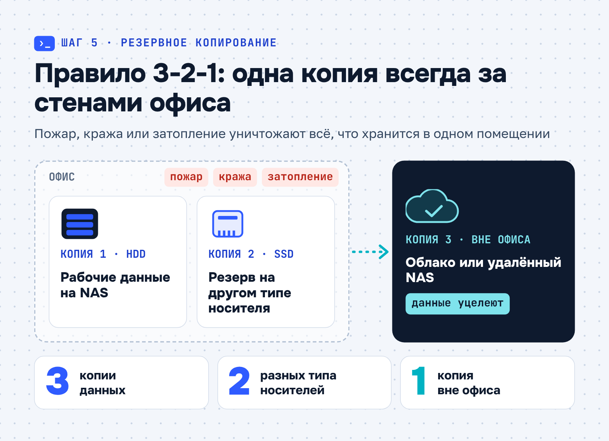
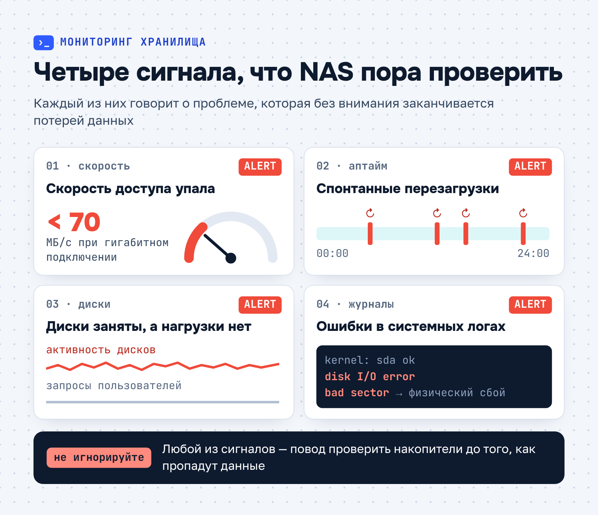
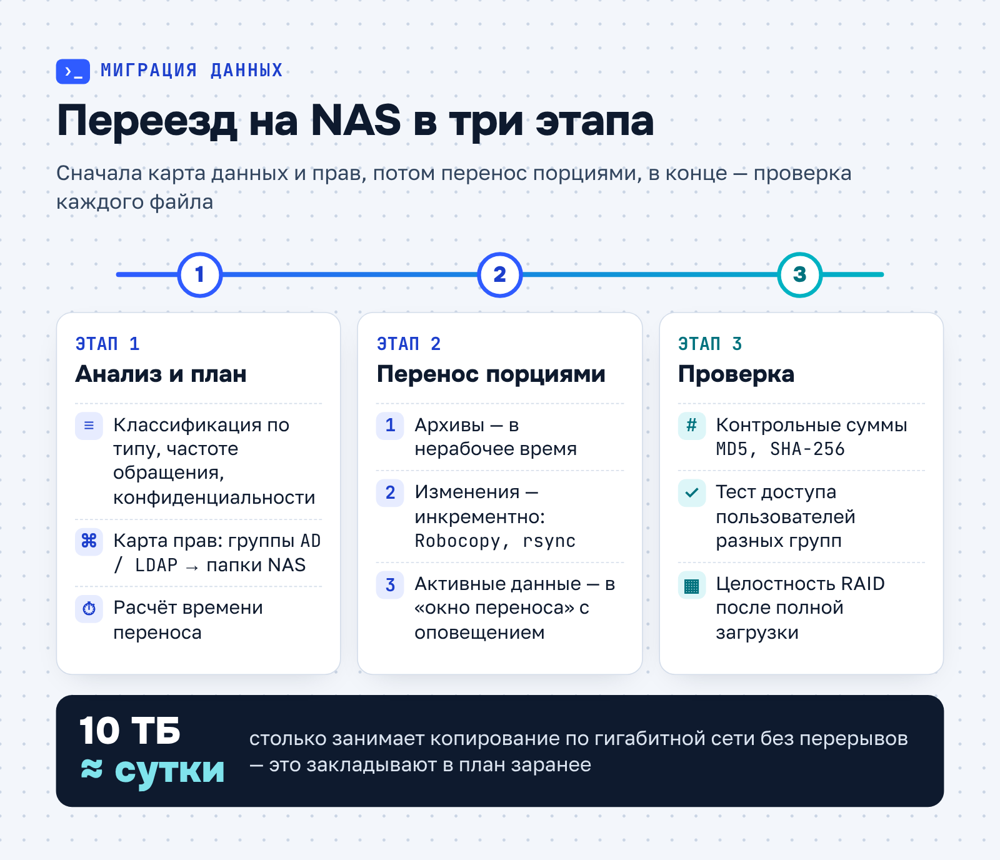
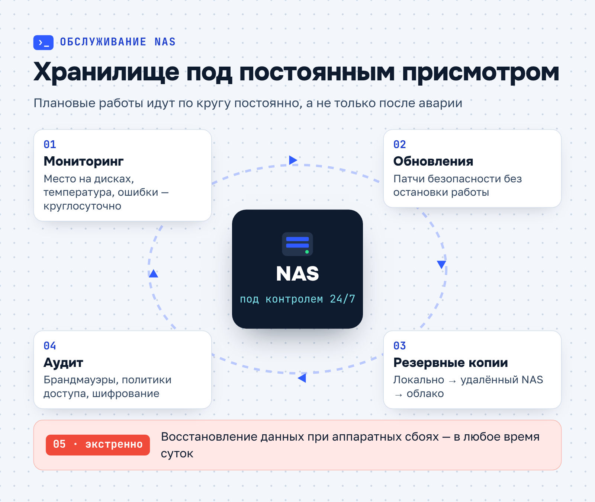

БИТ.CLOUD · Экспертная статья · IT-инфраструктура
Экспертная статья для ИТ-аутсорсера: что такое сетевое хранилище NAS и как его настроить
О заказчикеБИТ.CLOUD (1bitcloud.ru) — облачный сервис компании «Первый Бит»: аренда и хостинг 1С, виртуальные серверы, ИТ-аутсорсинг с поддержкой 24/7, информационная безопасность (аудит, аудит по 152-ФЗ, сканер уязвимостей) и Яндекс 360 для бизнеса. На рынке ИТ-услуг с 2006 года, данные хранит в российских дата-центрах уровня TIER III.
Задача
Написать для блога БИТ.CLOUD экспертную статью о сетевом хранилище NAS: что это, зачем оно бизнесу, как настроить его своими силами и где без инженеров не обойтись, — с переходом к услуге ИТ-аутсорсинга.
Решение
Выстроила материал от понятия к практике: преимущества (централизация, безопасность, производительность), сценарии по типам компаний, пять шагов настройки с типичными ошибками (RAID 0, стандартные пароли, непроверенные бэкапы), тревожные симптомы, интеграция с облаком и учётными системами, трёхэтапная миграция с расчётом времени, задачи для профессионалов и обслуживание на аутсорсинге.
Результат
Статья опубликована в блоге 1bitcloud.ru 30 июля 2025 года. Для портфолио текст получил шесть инфографик: схема NAS в сети компании, что будет с данными при отказе диска в разных RAID, правило 3-2-1, четыре тревожных сигнала, миграция в три этапа и цикл обслуживания.
Что такое сетевое хранилище NAS и как его настроить
Сетевое хранилище NAS (Network Attached Storage) — специализированное устройство или сервер, которое подключается к локальной сети и даёт компании общее пространство для хранения данных. В отличие от обычного файлового сервера, NAS работает на облегчённой операционной системе, созданной только для управления файлами, резервного копирования и доступа пользователей. Главная его ценность — простота развёртывания и масштабируемость. Для бизнеса это возможность хранить терабайты документов, финансовых отчётов, медиафайлов и баз данных в одном защищённом месте с контролируемым доступом.

Технически NAS — самостоятельный узел сети с собственным IP-адресом. Хранилище объединяет жёсткие диски в RAID-массив, и это даёт отказоустойчивость: если один накопитель выходит из строя, данные сохраняются на других. Современные модели поддерживают SSD-кэширование для ускорения операций и оснащаются производительными процессорами, поэтому обслуживают десятки параллельных запросов.
Почему бизнесу нужен NAS
Централизация данных убирает хаос. Когда каждый отдел хранит файлы на личных дисках или в разных облаках, поиск актуальной версии документа отнимает массу времени. С NAS у компании появляется одно общее хранилище: архитектурное бюро хранит на нём чертежи CAD, бухгалтерия — финансовые архивы, и у каждого отдела свой доступ.
Безопасность — второй довод. В NAS для этого есть готовые инструменты:
- шифрование AES-256 при передаче и хранении;
- настраиваемые политики резервного копирования, например ежечасные снимки состояния;
- интеграцию с Active Directory для аутентификации сотрудников.
Всё это снижает риск утечек и помогает выполнять требования 152-ФЗ «О персональных данных».
Производительность в локальной сети выше, чем при работе с облаком через интернет. Сотрудники открывают видео, CAD-модели или базы 1С прямо с хранилища без задержек. Протоколы SMB (Windows и macOS), NFS (Linux) и AFP (старые версии macOS) позволяют подключаться к хранилищу с компьютеров на разных системах.
Когда компании нужен NAS
Хранилище полезно не только крупным компаниям. Вот типичные ситуации, в которых оно закрывает вполне определённую задачу бизнеса:
| Кому | Задача | Что даёт NAS |
|---|---|---|
| Малому и среднему бизнесу от 10 сотрудников, например дизайн-студии | Команда одновременно работает с крупными файлами в Photoshop и Figma | Быстрая совместная работа и автоматическое резервное копирование проектов |
| Юридическим и финансовым организациям | Хранение конфиденциальных данных | Шифрование и разграничение доступа: бухгалтерия видит финансовые отчёты, отдел кадров — только трудовые договоры |
| Производственным предприятиям | Архив данных SCADA-систем, чертежей и записей камер | Хранение видео через протокол ONVIF без покупки отдельного сервера |
| Распределённым командам | Доступ к файлам из филиалов | Подключение через VPN — сотрудник работает с NAS как с локальным диском |
Во всех этих сценариях хранилище работает надёжно только при правильной первичной настройке. О ней — дальше.
Самостоятельная настройка: шаги и подводные камни
С базовой настройкой NAS можно справиться своими силами. Она укладывается в пять шагов, и на каждом есть типичные ошибки.
Шаг 1. Выбор оборудования
Модель зависит от задач. Для архива документов хватит компактного устройства на 2–4 диска, например Synology DS223j. Для работы с базами данных или 4K-видео нужны производительные стоечные модели с сетевыми портами 10 Гбит/с, например QNAP TS-h1277XU-RP.
Шаг 2. Диски и RAID
Конфигурацию массива выбирают по объёму и требованиям к надёжности:
- RAID 1 (зеркалирование) — для массивов до 8 ТБ;
- RAID 5 или RAID 6 — для хранилищ от 12 ТБ, где критична отказоустойчивость.
Используйте диски класса NAS, например WD Red Pro или Seagate IronWolf, с заявленной наработкой на отказ от 1 млн часов: они рассчитаны на круглосуточную работу.

Самая частая ошибка новичков — RAID 0 ради экономии места. Такой массив объединяет диски без избыточности, и выход из строя любого накопителя означает потерю всех данных.
Шаг 3. Настройка сети
Подключите устройство к роутеру или коммутатору через LAN-порт и назначьте ему статический IP-адрес, например 192.168.1.100. Затем включите протокол SMB/CIFS для совместимости с Windows: если пропустить этот шаг, NAS часто не виден в сетевом окружении.
Шаг 4. Пользователи и права доступа
В веб-интерфейсе администратора создают группы, например «Бухгалтерия» и «Маркетинг», задают квоты на дисковое пространство и включают историю версий файлов (в Synology это функция Snapshot). Так каждый сотрудник видит только то, что ему положено, конфиденциальная информация защищена, а место на дисках расходуется под контролем.
Шаг 5. Резервное копирование
Резервное копирование строят по правилу «3-2-1»: три копии данных, два разных типа носителей, например HDD и SSD, и одна копия вне офиса — в облаке или на географически удалённом NAS.

Пренебрегать этим правилом опасно: при пожаре, краже или затоплении офиса пропадут и рабочие данные, и резервные копии, если они хранились рядом.
Ошибки и тревожные сигналы
Кроме неудачного выбора RAID, при самостоятельной настройке часто встречаются ещё две ошибки:
- стандартные учётные данные вроде admin/12345 и отключённое шифрование;
- непроверенные бэкапы — копии создают, но восстановление из них ни разу не тестировали.
Обе ошибки незаметны, пока всё работает, и проявляются только в момент сбоя.

О неполадках NAS говорят вполне определённые симптомы. Тревожный сигнал — скорость доступа ниже 70 МБ/с при гигабитном подключении. Не менее опасны спонтанные перезагрузки и постоянная активность дисков без видимой нагрузки. В системных журналах обращайте внимание на ошибки «disk I/O error» и «bad sector»: они говорят о физических проблемах накопителей. Если эти признаки игнорировать, дело может закончиться потерей данных.
Интеграция NAS с облаком и бизнес-приложениями
Хранилище не обязательно работает изолированно — его можно сделать узлом гибридной инфраструктуры. Если синхронизировать папки NAS с Microsoft Azure или Yandex Cloud, получится «тёплый» резерв на случай пожара или кражи. Для CRM-систем, например Битрикс24 или amoCRM, NAS служит хранилищем вложений — договоров, записей звонков, сканов паспортов: основная база разгружается, а поиск ускоряется.
Особенно полезна интеграция с учётными системами:
- 1С — рабочие базы размещают на SSD-кэше хранилища, архивы — на HDD.
- Клиент-банки — журналы операций автоматически архивируются с шифрованием.
- ЭДО (СБИС, Такском) — подписанные документы сохраняются в структурированные папки с метатегами.
Такая связка сокращает рутину. Например, скрипт на Python может автоматически переносить закрытые финансовые отчёты из 1С в архивную зону хранилища и освобождать место.
Миграция данных на NAS
Перенос информации со старых серверов и рабочих станций — критичный этап внедрения. Ошибки здесь оборачиваются простоями, повреждёнными файлами и сбоями в бизнес-процессах, поэтому миграцию проводят по этапам.
Анализ и планирование. Сначала данные инвентаризируют: классифицируют по типам (документы, медиафайлы, базы данных), частоте обращения и уровню конфиденциальности. Параллельно рассчитывают время переноса: 10 ТБ по гигабитной сети копируются около суток непрерывной работы. Отдельно строят карту прав доступа, чтобы группы Active Directory или LDAP соответствовали новой структуре папок на NAS.

Поэтапный перенос. Данные переносят в три приёма:
- Редко используемые архивы копируют в нерабочее время.
- Изменённые файлы догружают инкрементно — инструментами вроде Robocopy или rsync.
- Для активных данных назначают «окно переноса» и заранее предупреждают сотрудников.
Проверка результата. Сверка контрольных сумм (MD5, SHA-256) подтверждает, что файлы перенесены без искажений. Если выборочно зайти под пользователями из разных групп, всплывут ошибки в правах. А после полной загрузки стоит проверить целостность RAID-массива, чтобы не пропустить скрытые повреждения.
Типичные ошибки миграции. Перенос без проверки совместимости файловых систем, например с NTFS на Btrfs, приводит к потере атрибутов и метаданных. Ещё опаснее игнорировать программные зависимости, особенно в 1С и бухгалтерских системах: абсолютные пути вроде D:\Reports нужно сохранить или корректно переназначить. Иначе приложения начнут сбоить, а компания — простаивать.
Если миграция проведена по этим правилам, сотрудники с первого дня работают с хранилищем без потерянных файлов и сбоев в приложениях.
Когда самостоятельной настройки недостаточно
NAS только кажется простым устройством. Есть задачи, где без опыта легко потерять данные:
- масштабирование — добавление дисков в работающий RAID-массив без потери данных, объединение нескольких NAS в кластер (например, Synology High Availability);
- восстановление после сбоев — перестроение массива при одновременном отказе двух дисков, расшифровка данных после аппаратного сбоя контроллера;
- тонкая оптимизация — настройка iSCSI-таргетов для нагруженных баз данных, балансировка между несколькими портами 10 Гбит/с, настройка SSD-кэширования с учётом соотношения операций чтения и записи.
Это задачи для инженеров, которые понимают работу СУБД и сетевого стека и имеют сертификаты производителей оборудования.
Профессиональное обслуживание
NAS требует регулярного контроля, как любое серверное оборудование: для бизнеса перебои в доступе к данным означают прямые потери. Поэтому обслуживание хранилища выстраивают как непрерывный цикл, а не как вызов специалиста после аварии.

На аутсорсинге хранилище получает пять видов поддержки, которые закрывают и плановую работу, и аварийные ситуации:
- Проактивный мониторинг — круглосуточный контроль дискового пространства, температуры и ошибок.
- Плановые обновления — установку патчей безопасности без остановки работы.
- Многоуровневое резервное копирование — локально, на удалённый NAS и в облако.
- Аудит безопасности — проверку брандмауэров, политик доступа и шифрования.
- Экстренную поддержку 24/7 — восстановление данных при аппаратных сбоях.
Малому бизнесу держать в штате системного администратора только ради хранилища и пары серверов часто невыгодно. Аутсорсинг даёт команду инженеров по фиксированной цене и с гарантиями, закреплёнными в SLA.
Почему доверяют БИТ.CLOUD
Настройка и поддержка NAS входят в комплексный ИТ-аутсорсинг БИТ.CLOUD. Наши инженеры сертифицированы производителями — Synology, QNAP, NetApp — и справляются в том числе с нестандартными задачами. Что вы получаете:
- безопасность — помогаем выполнить требования 152-ФЗ: настраиваем шифрование и журналы аудита;
- экономию — подбираем оборудование под реальные задачи, без переплаты за лишние функции;
- время на главное — хранилищем занимаемся мы, а вы — развитием компании.
Передайте управление ИТ-инфраструктурой профессионалам: состав услуг и тарифы — на странице ИТ-аутсорсинга БИТ.CLOUD. Мы отвечаем за бесперебойную работу хранилища, а стоимость владения остаётся предсказуемой.